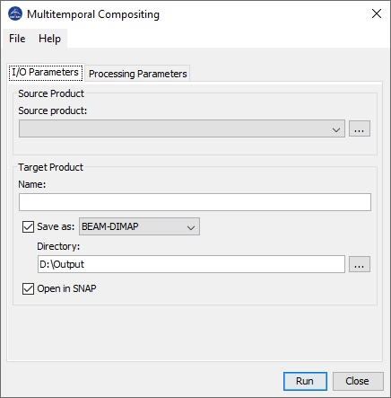

Multitemporal Compositing Operator
In mountainous and hilly
areas, SAR imagery is severely distorted geometrically and
radiometrically. With the applications of Geometric Terrain Correction
and Terrain Flattening, both the geometric and radiometric terrain
effects can be removed from the backscatters leaving noise being the
only factor affecting the land cover classification accuracy.
Multi-temporal filtering can be applied in this case to reduce the
noise level. Also the effects of spatially varying local resolution can
be compensated if images of both ascending and descending views are
combined. This operator generates a composite SAR image from a stack of
terrain-flattened and geometrically terrain corrected images together
with their simulated local illuminated areas.
The operation requires input images in map geometry. Therefore the processing chain should be as the follows:
- Run Terrain Flattening operator with Output Simulate Image option selected;
- Run Range Doppler Geocoding operator with the terrain-flattened images as input;
- Run Create Stack with Maximum Extent option selected;
- Run this operator with the stack created above as input.
Input and Output
- The
input to this operator should be a stack of terrain-flattened images. For polarimetric SAR
product, it should be in T3, C3, C2 matrix format.
- The
output of this operator is a multitemporal composite image for each band in the reference product. For polarimetric
SAR product, the output is terrain flattened coherency or covariance
matrices in T3, C3 or C2 format.
Parameters Used
No processing parameters are needed for this operator.

Reference:
[1] Small, D. "SAR backscatter multitemporal
compositing via local resolution weighting." In 2012 IEEE International
Geoscience and Remote Sensing Symposium, pp. 4521-4524. IEEE, 2012